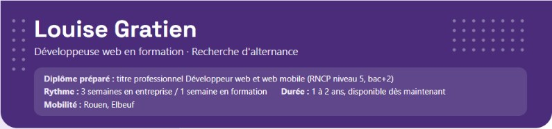
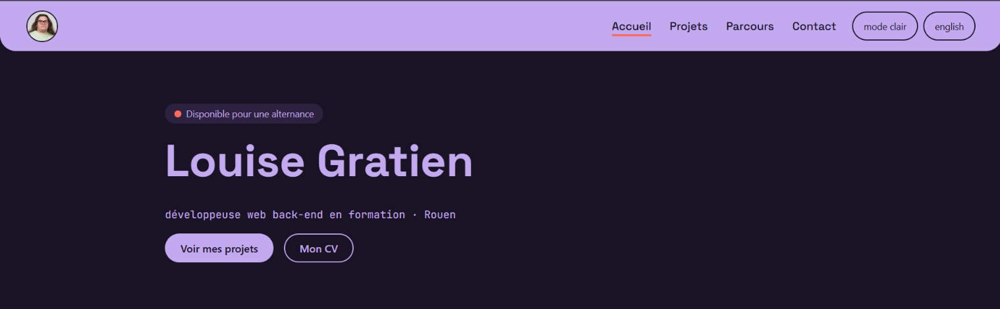

Mes projets de formation et perso, du back-end PHP au front mobile first.

Mini-framework MVC en PHP
Projet de formation : un mini-framework MVC écrit sans framework ni Composer, pour comprendre ce que
font les frameworks à ma place. Routeur qui distingue GET et POST, conteneur d'injection de
dépendances, autoloader PSR-4 maison, repositories PDO en requêtes préparées et CRUD de produits.
BDE404
Projet de groupe à Need For School : le site du bureau des étudiants de l'école, pensé mobile
first.

CV en HTML/CSS
Mon CV codé à la main : mobile first, imprimable sur une page A4 et lisible par les logiciels de
recrutement (ATS). Publié avec GitHub Pages.

En cours
Ce portfolio
Le site sur lequel vous êtes : plusieurs pages, mode sombre, version anglaise et un terminal caché,
en HTML, CSS et JavaScript sans framework.